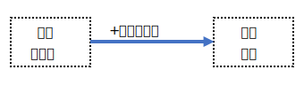
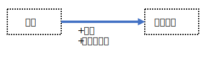
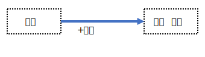
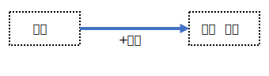
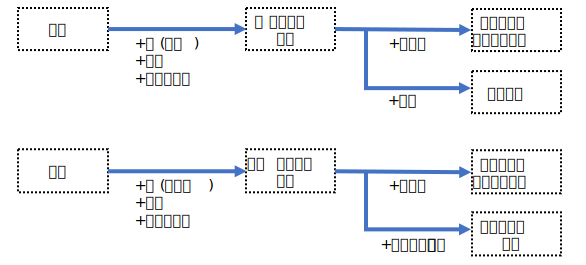
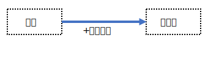
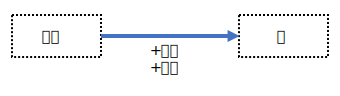

青矢印(→)
●集合(set) + ある構造 = 空間(space)

集合 に何らかの数学的構造を加味したものを 空間 という。
空間の要素を 点 という。
●測度空間(measure space)

測度空間とは, 以下の3要素からなる組 \((X,F,μ)\) のこと。
\[
\begin{array}{l|l}
\textbf{要素} & \textbf{説明} \\
\hline
X & 集合 \\
\hline
F & X上のσ-加法族(σ-代数)※ \\
& ・空集合を含む \\
& ・補集合に閉じている \\
& ・可算個の集合の合併に閉じている \\
\hline
μ & F上の関数で, \textbf{測度(measure)} と呼ばれる \\
& ・μ:F→[0,∞)\\
& ・\textbf{非負性}:μ\geq 0 \\
& ・\textbf{空集合の測度}:μ(\varnothing)=0 \\
& ・\textbf{可算加法性}:互いに素な集合列\{A_n\}に対してμ\left(\bigcup_{n=1}^\infty A_n\right)=\sum_{n=1}^\infty μ(A_n)
\end{array}
\]
※ 加法族
\[
\begin{array}{l|l}
概念 & 説明 \\
\hline
集合族 & ある集合の部分集合からなる集合。制約なし \\
\hline
加法族 & 集合族の中でも, 特定の演算に閉じているもの \\
\hline
σ加法族 & 加法族の中でも, 可算和・補集合に関して閉じているもの。測度論, 確率論の基礎になる
\end{array}
\]
●位相空間(topological space)

以下の位相 \(O\) と集合の組 \((X,O)\) を位相空間という。
-
1. 空集合と全体集合が含まれる
\(\varnothing \in O,\quad X \in O\)
-
2. 有限個の交差に対して閉じている
\(O_1,O_2.\cdots,O_n \in O \Rightarrow \bigcap_{k=1}^n O_k \in O\)
-
3. 任意個の和集合に対して閉じている
\(\{O_λ\}_{λ\in A}\subset O \Rightarrow \bigcup_{λ\in A}O_λ\in O\)
●距離空間(metric space)

ある空でない集合 \(X\) に対して, 関数
\[
d:X \times X \rightarrow [0,\infty)
\]
が以下の条件をすべて満たすとき, 組 \((X,d)\) を距離関数 と呼ぶ。
-
1. 非負性(Non-negativity)
すべての \(x,y\in X\) に対して距離は 0 以上。
\(d(x,y) \geq 0\)
-
2. 自己同一性(Identity of indiscernibles)
距離が 0 であるのは 2 点が同一のときのみ。
\(d(x,y)=0 \Leftrightarrow x=y\)
-
3. 対称性(Symmetry)
点 \(x\) から \(y\) への距離は, \(y\) から \(x\) への距離と同じ。
\(d(x,y)=d(y,x)\)
-
4. 三角不等式(Triangle inequality)
直接の距離は, 経由する距離より短いか等しい。
\(d(x,z) \leq d(x,y)+d(y,z)\)
●ベクトル空間(vector space)

集合 \(V\) が体 \(F\) 上のベクトル空間であるとは, 以下の 8 つの公理を満たす場合。
-
・加法に関する公理
- 1. 結合律: \(u+(v+w)=(u+v)+w\)
- 2. 交換律: \(u+v=v+u\)
- 3. 零ベクトルの存在: ある \(0 \in V\) が存在し, \(v+0=v\)
- 4. 逆元の存在: 各 \(v \in V\) に対して, ある \(-v \in V\) が存在し, \(v+(-v)=0\)
-
・スカラー倍に関する公理 (スカラー \(a,b \in F\))
- 5. 分配律(ベクトルに対して): \(a(v+w)=av+aw\)
- 6. 分配律(スカラーに対して): \((a+b)v=av+bv\)
- 7. 結合律: \(a(bv)=(ab)v\)
- 8. 単位元の存在: \(1v=v\) (ここで 1 は体 \(F\) の乗法単位元)
●マグマ(magma)

マグマとは, 以下の構造を持つ集合のこと。
・集合 \(M\)
・その集合上で定義された二項演算 \(μ\) の組 \((M, μ)\)
任意の \(a,b\in M\) に対して, 演算 \(μ(a,b)\) の結果も再び\(M\)に属する (閉性) ことが条件。
それ以外(結合律や単位元の存在など)の 追加の公理が一切課されない。
\[
\begin{array}{c|c|c|c|c}
構造名 & 閉性 & 結合性 & 単位元 & 逆元 \\
\hline
マグマ & 〇 & × & × & × \\
\hline
半群 & 〇 & 〇 & × & × \\
\hline
モノイド & 〇 & 〇 & 〇 & × \\
\hline
群 & 〇 & 〇 & 〇 & 〇
\end{array}
\]
●環(ring)

加法 と 乗法 という 2 つの演算が定義された集合 \((R,+,・)\)。
- ・加法に関する性質(アーベル群)
- 1. 結合則: \((a+b)+c=a+(b+c)\)
- 2. 単位元の存在: ある元 \(0\in R\) が存在し, \(a+0=a\)
- 3. 逆元の存在: 各 \(a\in R\) に対して, \(a+(-a)=0\)
- 4. 可換性: \(a+b=b+a\)
- ・乗法に関する性質(モノイド)
- 5. 結合則: \((a・b)・c=a・(b・c)\)
- 6. 単位元の存在: ある元 \(1\in R\) が存在し, \(a・1=a\)
※ 単位元が存在する場合「単位的環」と呼ばれる。
- ・分配則(加法と乗法の関係)
- 7. 左分配則: \(a・(b+c)=a・b+a・c\)
- 8. 右分配則: \((a+b)・c=a・c+b・c\)